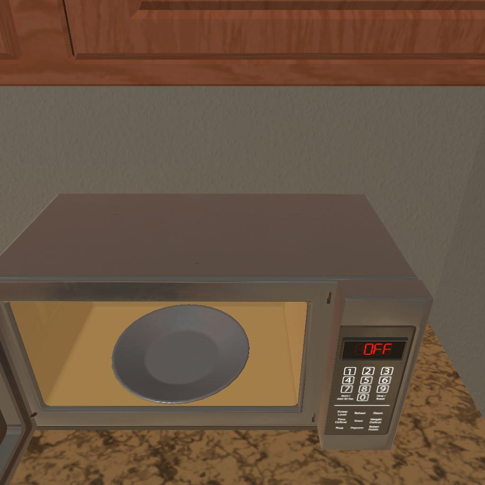
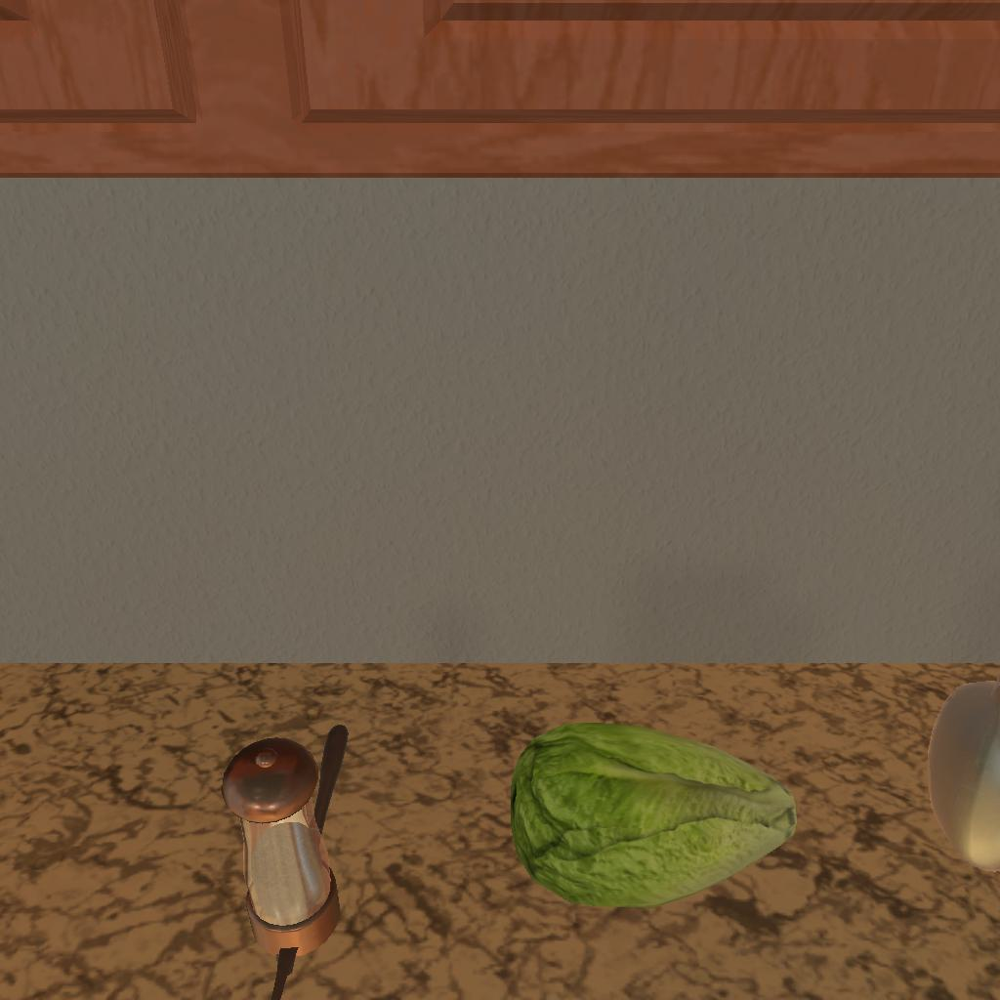

---------------------------------------------------------task: 23---------------------------------------------------------
--------------------------------------------------------------------------------------------------------------------------------------------------------------------
--------------------------------------------------------------------------------------------------------------------------------------------------------------------
Step:--------------------------------------------------------------------------17-------------------------------------------------------------------------------
----------------------------------------
VLM Prompt:
Image1:
Image2:
**Instruction**
1. Analyze the provided images to identify all visible household objects and compare the difference between images (e.h. whether the object is opened or not and taken on hand or not), focusing on those relevant to the task description "put a hot mug in coffeemachine."
2. Use the analysis of images and the task hint "The agent must find an object of the desired type, pick it up, go to a microwave, heat the object with the microwave, then find the correct location to place it, and put it down there. The agent does not need to use the microwave button or open the microwave to heat the object, and the agent just needs to do action that is "heat the object with the microwave"." to answer the question: what is the most reasonable action in the choices for the task description "put a hot mug in coffeemachine"?
3. Decide and write the answer using the template: The answer is: (i): , where i is the real number. If there is no desired object in images, search every place based on **Initial Observation** to find the object. And if no one is exactly correct, choose a similar answer.
**Initial Observation**
You are in the middle of a room. Looking quickly around you, you can see cabinet (1-15), fridge (1), countertop (1-4), drawer (1-4), microwave (1), toaster (1), coffeemachine (1), garbagecan (1), sink (1), stoveburner (1-3), sinkbasin (1)
**Answer Choices**
(1): go to cabinet 1
(2): go to cabinet 2
(3): go to cabinet 3
(4): go to fridge 1
(5): go to cabinet 4
(6): go to cabinet 5
(7): go to cabinet 6
(8): go to cabinet 7
(9): go to drawer 1
(10): go to drawer 2
(11): go to cabinet 8
(12): go to drawer 3
(13): go to cabinet 9
(14): go to cabinet 10
(15): go to drawer 4
(16): go to cabinet 11
(17): go to toaster 1
(18): go to cabinet 12
(19): go to cabinet 13
(20): go to cabinet 14
(21): go to cabinet 15
(22): go to countertop 2
(23): go to coffeemachine 1
(24): go to garbagecan 1
(25): go to countertop 3
(26): go to countertop 4
(27): go to sink 1
(28): go to stoveburner 1
(29): go to stoveburner 2
(30): go to stoveburner 3
(31): go to sinkbasin 1
(32): take lettuce 1 from countertop 1
(33): take peppershaker 1 from countertop 1
(34): take soapbottle 1 from countertop 1
(35): take butterknife 1 from countertop 1
(36): take spoon 1 from countertop 1
(37): examine countertop 1
**Answer**
Let's think step by step by following the instructions.
----------------------------------------
----------------------------------------
Original Response:
Firstly, we must identify the objects in the images provided. In Image 1, we see a microwave with a plate inside it, and in Image 2, we see a pepper shaker and lettuce on the countertop.
The task description mentions "put a hot mug in coffeemachine," but there is no mug visible in either of the images provided. Therefore, we must search every place based on the Initial Observation to find a mug.
The most likely locations for finding a mug would be in the cabinets or on the countertops, as they are common places to store such items. The coffeemachine is mentioned in the task, so it could also be nearby.
Based on the task hint, we don't need to interact with the microwave buttons or open the microwave to heat the object; we only need to perform the action "heat the object with the microwave."
Since we cannot see a mug in the images provided, we should go to a location where a mug is likely to be found.
The answer is: (1): go to cabinet 1.
----------------------------------------
----------------------------------------
>>> Refine Original VLM Response and Get Pure Action: go to cabinet 1
----------------------------------------
-----------------------------------------------------------------
Running time: 9.67555284500122 seconds
Total Money: 11.998950000000002
-----------------------------------------------------------------
-----------------------------------------------------------------
Text Observation:You arrive at loc 0. The cabinet 1 is closed.
-----------------------------------------------------------------
UNSUCCEED